Argonaut Peak (attempt)
- Northwest Buttress (attempt)
- May 3-4, 2003
Somewhat edited from the original post on cascadeclimbers.com.
Theron and I hiked to the Argonaut-Colchuck col via the Colchuck Glacier on Saturday to climb the NW Buttress of Argonaut. This climb should be about 500 feet of 4th and 5th class climbing to 5.6. Another way to approach the climb would be to go up Mountaineer’s Creek and camp in the basin below Argonaut Peak. We had rock pro, a picket, mountaineering axes and crampons.
We hiked up to Colchuck Lake, enjoying the views. At the lake, the temperature dropped suddenly with a cold wind. We ate some lunch, then Theron’s camera “seized up.” On the rest of the trip, Theron gradually perfected his methods of protecting the camera and keeping it working. Sadly though, in order to take a picture, you had to really hammer on the shutter button, and the inevitable blurring would be a source of misery later.
We were pretty tired at Colchuck Col, almost napping for a few minutes despite the wind and snow. Clouds drifted over Argonaut, and we descended about 400 feet to a nice granite buttress. We regained most of that altitude and chose a campsite at the Argonaut-Colchuck Col.
I had brought a Betamid tent, but foolishly didn’t bring snow stacks. Lots of improvisation allowed us to get something that would stay up. We cooked dinner in the tent, which was roomy and protected us from wind. Theron gave me a sleeping pill, and the next morning I was ecstatic with the great sleep I’d had. I’d resigned myself to never sleeping well the first night out on a trip, but those days are over!
The next morning, snow was plastered on near-vertical rock. An easier line to the summit lay directly by the tent, and Theron and I both secretly entertained ideas of climbing that instead. My curiousity won out. I wanted to see what it would be like to climb easy rock climbs in snow. Theron and I had climbed the Tooth in January , but were blasted by dry, sunny, warm weather! So my dream of cold steep rock was still untested.
We descended a steep ridge and a very icy couloir for 800 feet to get to Argonaut’s north bowl, then climbed 1000 feet up the “snow finger” described in guidebooks. This climb was long and required lots of step kicking. A tiny squirrel lived on the slope and occasionally popped up from a hole in the snow.
We started on the rock around 9:30 am in good visibility. Right off the bat there was tough climbing with a 30 foot wall on the right of the ridge with good blocky handholds. I climbed with aluminum crampons on my boots, which really takes some getting used to. Halfway up, I ran out of rope, and had to work out a system with Theron to “undouble” the 50 meter rope so I could have the full 50 meters. It provided a lesson in the scale of the ridge, in that I thought 25 meters would be enough to gain the first cliff, but it took almost double that.
I resorted to direct aid at the top of the cliff where thin rotten snow made it hard to find something to grab. I was able to get my axe behind a chockstone and pull myself up. Somewhat appalled, I belayed Theron from a snow anchor.
Theron arrived with blood on his face. He was tugging on a hex and it ended violently. Only 50 meters up and we were sobered by these conditions. Now it started to snow again.
I really wanted to keep going, because it looked like after a pitch of snowy ramps we’d be able to climb rock and take off the crampons. Ignoring the new snow, I started up and ran into a rock step that would be a 30 second operation if dry. I was camming my axe into cracks, scrabbling for holds under the snow, sweating hard, and finally got up. I belayed at a scrub bush. Theron came up, blinked at the belay, and I took off again to climb a snowy ramp on the crest to slabs. The next 15 feet looked like the crux of the route. I looked for a way around the slab, but it was the only possible route given a serious lack of friction. Finally I was able to place a nut, attach a sling and stand up in it.
With my other foot, crampon points were cammed into a flaring crack.
I left the security of the sling with my bare hands on crimper holds excavated from the snow. Tottering somewhat, I worked for an axe placement at the top of the slab for the next minute, heart in my throat.
Finally I passed the slab, the casual one-handed summertime slab, and reached a stance to place some gear. The exposure was intense. I got some good gear and continued up into a chimney, life somewhat complicated by a time-bomb block shifting under the snow. I had hoped to set a belay in here below a big wedged block that looked climbable (although overhanging). Now, scrunched beneath the block, with only one decent nut placement and a scary loose boulder below, I was mentally ready to call it quits. The climbing had been so hard it was unjustifiable for the time we had. Theron felt the same way, feeling we’d already gone too far due to “summit fever.” He was right. I rappelled from the nut and breathed a sigh of relief on reaching Theron’s belay. We made three more rappels to the base of the ridge. Once I saw how low we still were on the route, I abandoned any second guessing about our decision to leave.
We climbed down into the bowl as the snow increased. On the climb back up to the col, we revelled in the scenic beauty of the area. Sun, clouds and peaks put on an amazing, ever-changing show, with blasts of wind and spindrift coming down the north face of Argonaut. It was a luxury to see these releases of snow and fury without endangerment. We could see the North Ridge of Stuart disappearing into a black summit cloud. Colchuck Peak from this side has a complex maze of gullies and cliffs. There was an amazingly huge cornice on the Col near our camp that we trusted to stay in place as we skirted beneath it. There is also an amazing tower (I call it the Tower of Adamant) that terminates at the col.
We packed up our camp and eventually gained the Colchuck-Dragontail col. On the way Theron saw a ferret (?), but he dipped back under the snow before I saw him. We made our way tiredly down to the lake, but were soon rewarded with great glissading opportunities. Many excellent slides down the snow brought smiles to our faces. It’s great fun to have the feeling of “riding,” and look around at the ridges like a passenger on a train. A few instances of that will erase whole hours of misery!
Of course, right at the lake we endured 10 minutes of agony crashing through snowbridges over boulders. Theron got stuck and had to dig out at one point.
We crossed the frozen lake, certainly for the last time this season. We ate and drank by a river. Theron was surprised at my sandwiches. The energy provided by them kept us going quickly to the car. I think he planned to live on powerbars during the day. But a pre-made Safeway sandwich, with seperate mayo and mustard packets is much more appetizing!
Now we know what rock climbs covered in snow (not ice) are like - REALLY HARD. We’ll know what to expect next time. They can be climbed but it takes a lot longer, and you need to be able to climb barehanded (something that helped a lot on the last pitch). You also need to be able to take crampons on and off, or get really good at climbing rock in crampons (todo…). For me, I think I’ll come back for this climb in the summer! Thanks to Theron for great companionship!
</td>
<td width=”30%” valign=top>
|
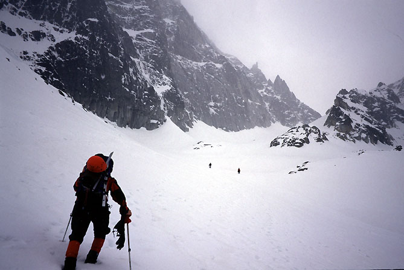 Theron hiking up the Colchuck Glacier in worsening weather. |
|
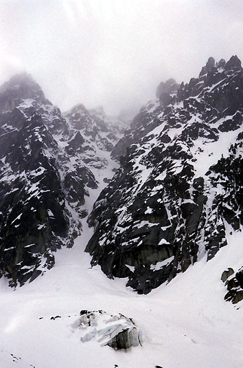 The Northeast Buttress Couloir on Colchuck Peak. |
|
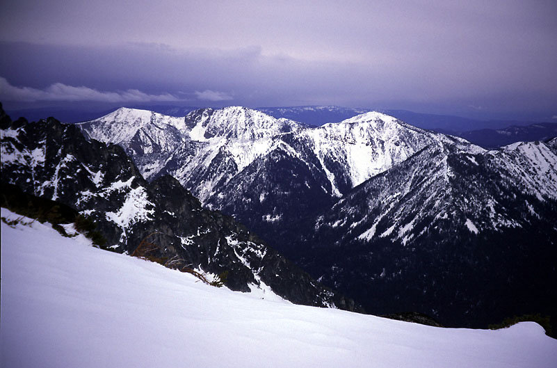 Looking down to Ingall's Creek to the east. |
|
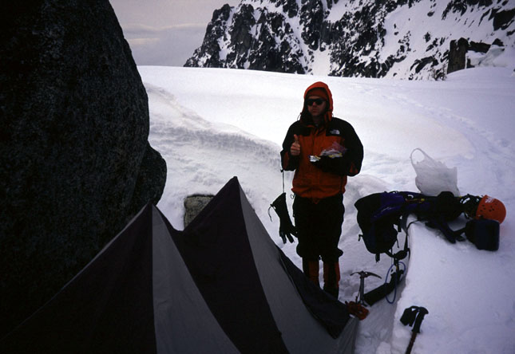 Theron and the Betamid at the Argonaut-Colchuck Col. |
|
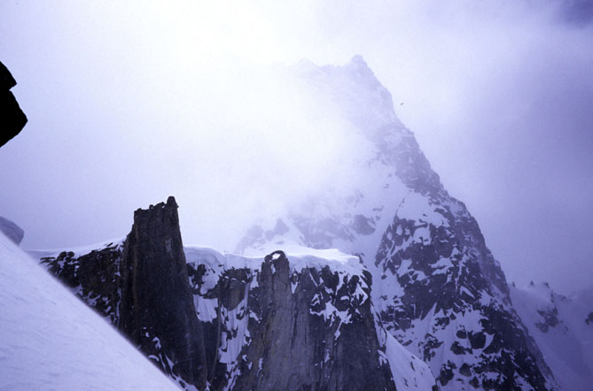 The beautiful Colchuck-Argonaut Col. Cool towers and cliffs. |
|
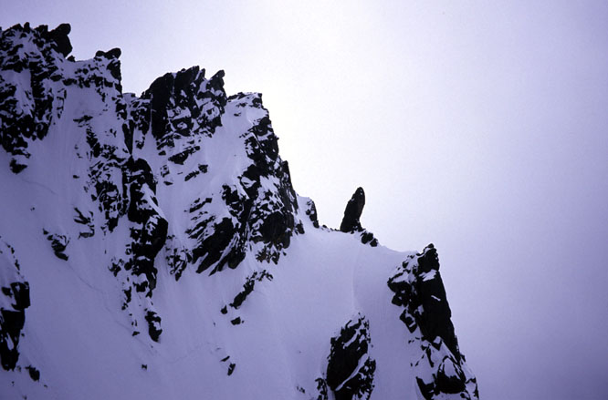 A curious ridge on our right during the climb. |
|
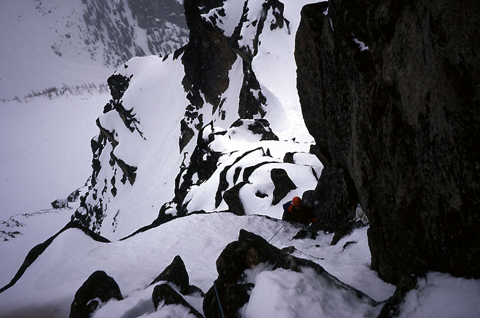 Theron climbing the second pitch. |
|
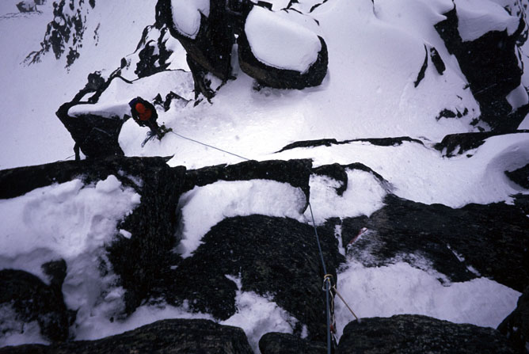 Looking down from the 3rd pitch. |
|
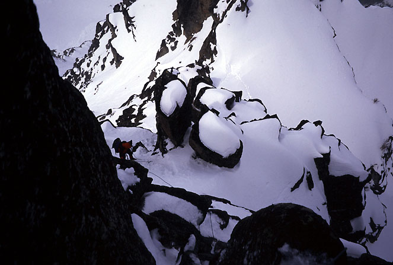 Considering options in the chimney. |
|
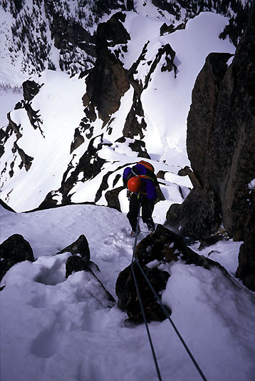 Michael rappelling down. |
|
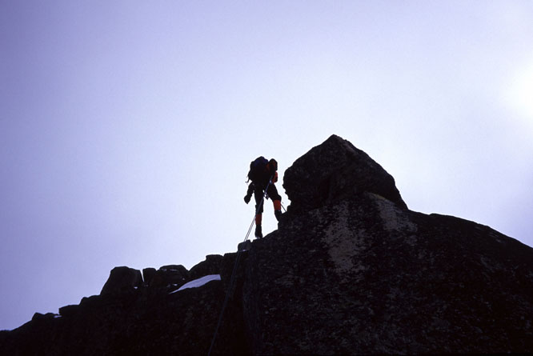 Theron rappelling from the climb. |
|
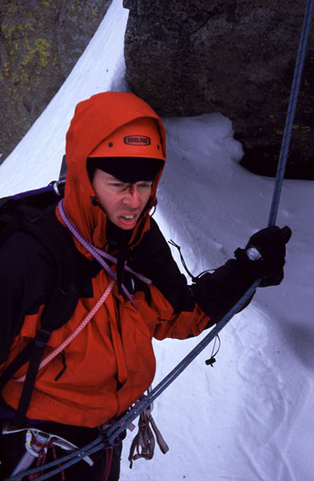 Theron with wound. Off rappel. |
|
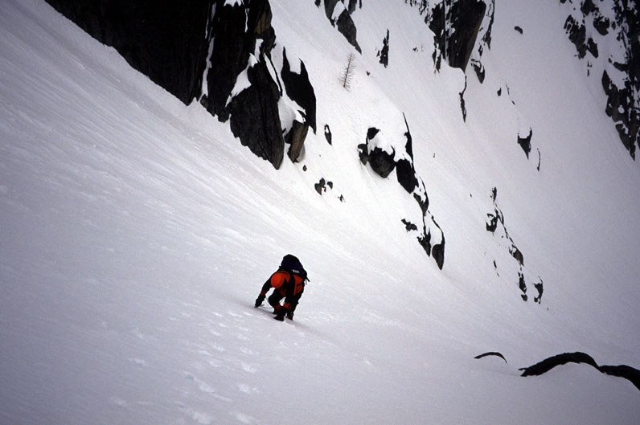 Theron climbing up from Argonaut's North Bowl. |
|
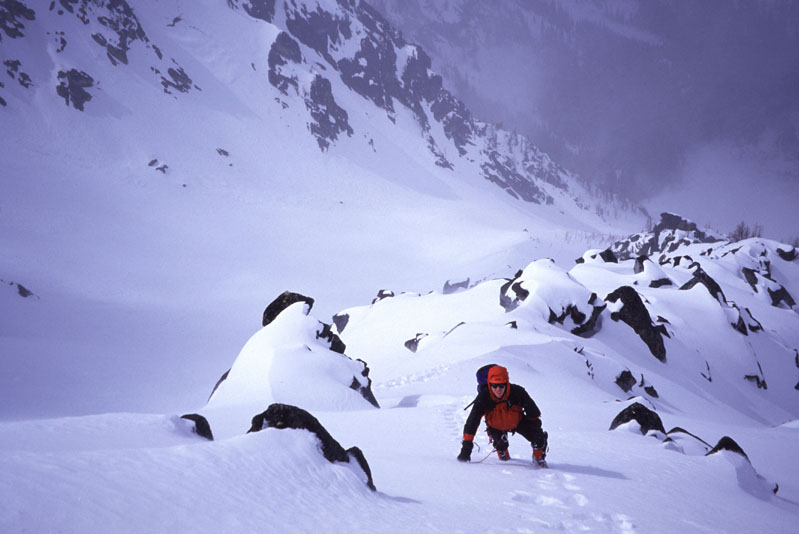 Theron continuing to the Argonaut-Colchuck Col. |
|
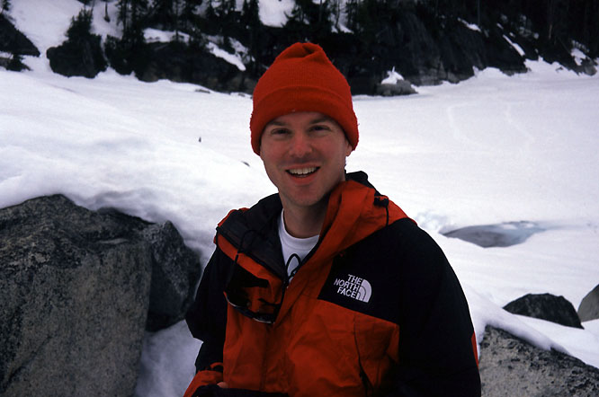 Theron is a sturdy fellow. |
{kind=link}
{kind=link}
{kind=link}
{kind=link}
{kind=link}
{kind=link}
{kind=link}
{kind=link}
{kind=link}
{kind=link}
{kind=link}
{kind=link}
{kind=link}
{kind=link}
{kind=link}